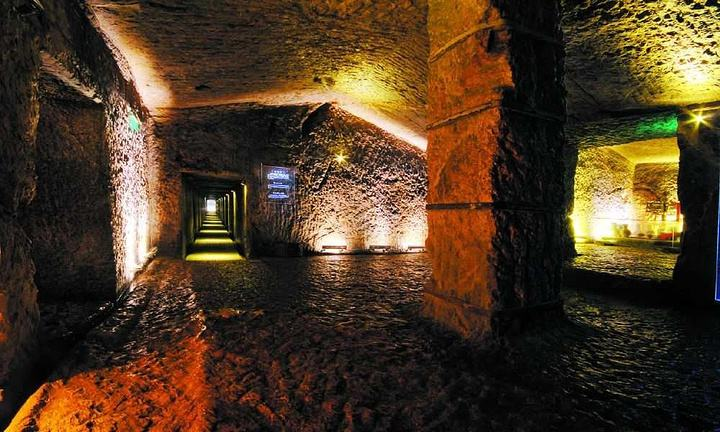

|
|  |
龟山汉墓位于中国江苏徐州市九里山经济开发区境内的龟山西麓，为西汉第六代楚王襄王刘注（即位于公元前128年－－前116年）的夫妻合葬墓。
龟山汉墓葬开口处于龟山西麓，呈喇叭形状，为两座并列相通的夫妻合葬墓，墓由两条墓道两条甬道以及十五间墓室组成，由人工开凿而成。汉墓分为南北二个甬道，长度分别为56米，二甬道长度差仅为11.90厘米，二甬道之间的距离19米，共有15个墓室，墓道和墓室总面积达到700多平方米，容积达2600多立方米。两甬道均由26块塞石分上下两层堵塞，每层13块，每块塞石重达6－7吨。
南甬道整整56米长的甬道，精度居然达到了1/16000。南北二条的甬道平行向里开凿，二甬道距中轴线的偏差仅有5毫米，精度达1/10000。二甬道的夹角为20秒，误差仅为1/16000。通道地平面内高外低，内外高低相差527毫米，呈1/1000的坡度。现在还不知道当时是如何打出精度这么高的甬通，也是迄今世界上打凿精度最高的通道，二甬通中的墓室有洞口相通。
南甬道为楚王襄王刘注墓，北甬道为其夫人墓，两墓均为横穴崖洞式。墓葬开口处于龟山西麓，呈喇叭形状，由两条墓道两条甬道以及十五间墓室组成，由人工开凿而成。墓室十五间，室室相通，大小配套，主次分明，总面积达700余平方米，容积达到2600多立方全靠手工开凿。此墓工程浩大，气势雄伟，实为世界罕见，中华一绝。
龟山汉墓是徐州已发掘的十几座汉代王侯陵墓中规模最大、建筑最为精美的一座。汉墓工程规模巨大，设计精美巧妙，技术含量非常高，有些方面甚至就连现代科学也无法做到。整个汉墓雕凿细致入微，气势雄伟，既有着汉王朝的雄浑厚重，又有着楚文化的浪漫恣肆，是汉朝工匠们智慧与心血的结晶，也是楚汉文化融合的产物。雕花窗棂。堂中屏风为“秋风戏 马”图；反映当年项羽在虞姬陪侍下，观看士卒驰马操练的场景。东配殿的壁画，由144 块大小不等的正方形和长方形砖坯雕刻烧制而成，长9米，高2米。项庄舞剑画面，描述了当年鸿门宴的紧张气氛。西配殿为一大型壁画，勾勒了兵败垓下后霸王诀别爱姬的离愁场景。
后区依山就势，设计为百米长廊，长廊以古来咏台诗词，当今书法大家笔迹勒石镶壁，既能陶冶游人性情，又使人在游览中受到教益。景区内遍植名木异卉，更有霸业雄风鼎、重九台、乌雅槽、系马桩、项王武库、人杰鬼雄石等诸景点缀其间，使戏马台景区疏密有致，蔚为大观。开放以来登台揽胜的游客络绎不绝，它已成为国内项羽遗踪旅游网络上的一颗熠熠生辉的明珠，也是楚汉文化中杰出的代表。 |
|